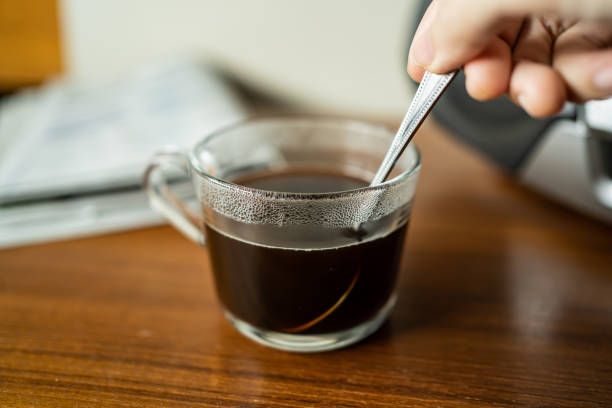

Home
Odin's Instant Coffee

Description
Make instant coffee that doesn't taste burnt. Good taste shouldn't require you to splurge.
Ingredients
- 1 tbsp instant coffee powder/granules
- A dash of cold water
- 80 degrees celsius hot water
Steps
- Add cold water to a cup.
- Add in the coffee powder/granules and whisk with a spoon until it froths.
- Heat water to 80 degrees celsius or boil water in a kettle and let it sit for five minutes.
- Pour hot water in the cup and stir. Add sugar or cream to taste.